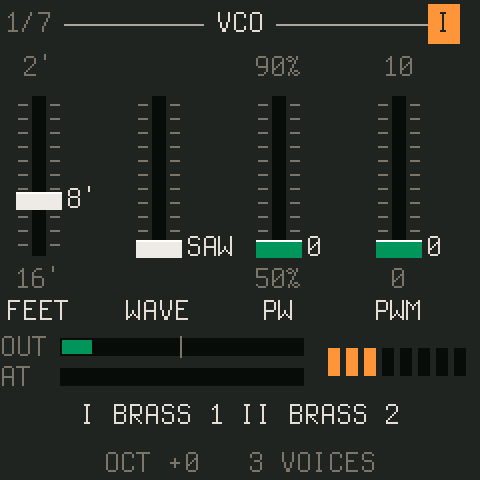
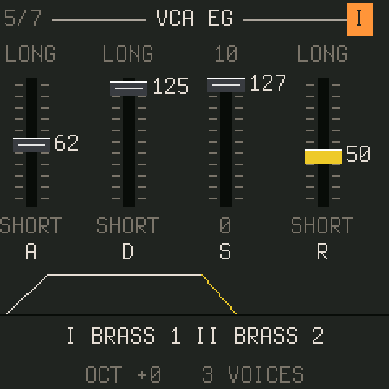
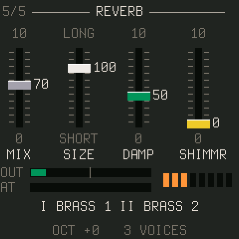
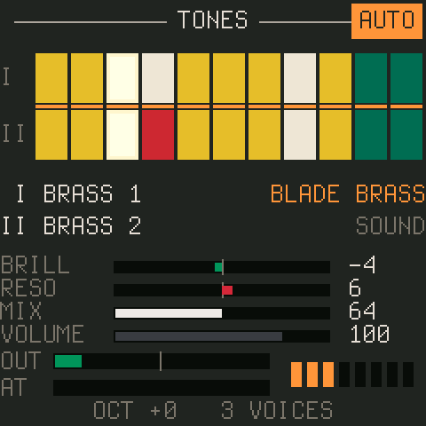
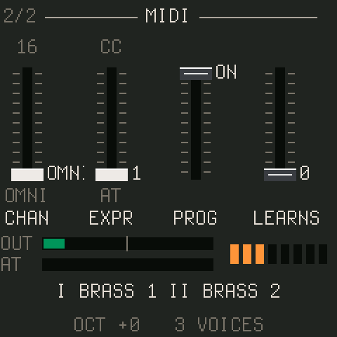
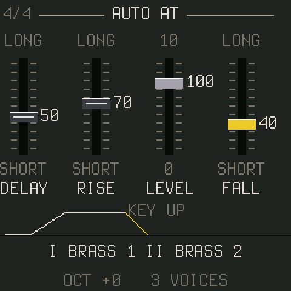

CS-1
manual
- The panel
- The screen
- Playing
- Tones and sounds
- Saving your own
- The pages
- MIDI
- Auto after touch
- The emulator
Everything here works the same in the browser emulator: it runs the firmware itself. Open it beside this page and try things as you read.
The panel
The FM-1 has seven encoders, fourteen buttons, a MASTER knob and 27 keys. CS-1 uses them like this:
| Control | Does |
|---|---|
| KNOB 1 – 4 | The four sliders of the page on the screen. |
| SELECT | The ribbon: turning it bends the pitch of whatever is sounding and it springs back when you stop (the RIBBON page sets how far and how fast, or makes it hold). The pages are on the buttons. |
| PRESETS | The sounds: the 52 factory sounds, then your 32 user slots. |
| ALGORITHM | On HOME, steps along the selected channel's row of tones (see tones). On any other page, turns through that button's pages either way: the way back through EDIT's seven or FX's seven. |
| MASTER | Volume, after everything: the knob for the room. VOLUME on HOME is part of the sound and is saved with it, for balancing one sound against another. |
| HOME | The TONES page. Held, the keys become the tone buttons. |
| EDIT | The channel's sections in turn: VCO, VCO 2, VCF, VCF EG, VCA EG, VCA, TOUCH. |
| SEL | Channel I or II for editing and for the tone row. Lit for II. |
| ENV | VCF EG, then VCA EG. |
| LFO | SUB OSC, SUB OSC 2, TOUCH RESP, AUTO AT. |
| FX | RING MOD, DRIVE, CHORUS, DELAY, DELAY 2, REVERB, REVERB 2, PHASER. |
| ARP | PERFORM, KEYBOARD, MODES, RIBBON. |
| GLO | MAIN, MIDI, KEYS, KEYS 2. |
| SAVE | Saves the panel into a user slot (below). |
| REC | MIDI learn (below). Lit while waiting. |
| SEQ | The auto after touch on or off. Lit when on. |
| PLAY | Hold: a sustain latch, as if the pedal were down. Lit when on. |
| OCT− OCT+ | The keys' octave, two each way. Both together: all notes off. |
The screen



Every page is four sliders drawn as the CS-80 panel had them: a slot with tick marks, a cap in the panel's colour for that control, the value beside the cap, the slider's legends above and below, the name beneath. Turning KNOB 1 to 4 moves them. The header shows the section's name, where you are in a button's cycle (2/4), and on channel pages which channel you are editing, as a lit orange button. The status line at the bottom shows the two tones playing (with a star when the channel's panel has moved away from the tone), the octave, how many voices sound, and on the FM-1 how much of its time the audio takes.
The strip above the status line is a monitor on most pages: OUT is the output level, green up to the point where the master knee starts to bend it, yellow in the knee; AT is the pressure in effect, so you can watch the auto after touch curve; the eight dots are the voices. On VCF EG, VCA EG, AUTO AT and SUB OSC the strip draws the envelope, the curve or the waveform instead.
Playing
The keys play, polyphonically, eight voices with the oldest stolen. OCT− and OCT+ move them two octaves each way. Velocity does what the TOUCH page's I.LEV and I.BRIL say. The FM-1's keys are rubber domes with a carbon pill under each, and twenty of them (F3 to C5) sit on rows the chip can measure, so with SENSE on (the KEYS page under GLO) they play with velocity and send polyphonic pressure as you lean on them; that is Velo's sensing, by Charles Vestal, with no change to the hardware. The seven top keys have no measurable row and play at TOP VEL. PLAY latches a sustain, which in SUSTAIN mode II (ARP, third page) ends the previous chord's notes when you play the next. SELECT is the ribbon: turn it while notes sound and the pitch bends, a few cents or a couple of semitones a detent as the RIBBON page's RANGE says, and, after the RIBBON page's DELAY, springs back to centre over RETURN's time. HOLD on that page keeps the bend where you leave it instead: it stays where you leave it and a turn back through centre lands on it exactly.
The CS-80 had pressure under every key. CS-1 takes pressure from the keys themselves (the KEYS page), from channel or polyphonic aftertouch over MIDI, from a CC (the mod wheel by default: the MIDI page's EXPR), and from the auto after touch curve, whichever is highest. Pressure drives A.BRIL and A.LEV on each channel's TOUCH page, and on the TOUCH RESP page the sub oscillator's speed, pitch depth and filter depth.
Tones and sounds

A tone is one channel's panel: one of the CS-80's 22 presets, read off its manual. Row I's eleven and row II's eleven are the two rows of buttons on the real instrument, and CS-1 keeps to them: channel I plays row I tones, channel II row II. Hold HOME and press a key: the lower eleven keys (F3 up to D♯4) are row I's buttons in order, the upper eleven (A4 up to G5) row II's; the key LEDs show the two lit tones while HOME is held. ALGORITHM steps along the selected channel's row too.
A sound is everything: both channels' tones and panels, the performance section and the effects. PRESETS runs through the 52 factory sounds, then your user slots; program change does the same. The HOME page shows the sound's name, with a star as soon as you change anything.
Saving your own
- Load a sound and edit anything, on any page.
- Press SAVE. The status line proposes a slot: the first free one for a factory sound, its own for a user sound. Turn PRESETS for another.
- Press SAVE again. The whole panel goes into the slot. HOME cancels while it is asking.
To go back to a sound as it was stored, turn PRESETS one click away and one back. The slots live in their own flash sector; in the emulator they live in the browser, and Export presets there writes them to a file you can import on another machine.
The pages
The reference lists every page and every parameter, generated from the firmware. The short version of what lives where:
| Button | Pages | What |
|---|---|---|
| HOME | TONES | The tone rows, the sound, BRILL RESO MIX VOLUME. |
| EDIT | VCO · VCO 2 · VCF · VCF EG · VCA EG · VCA · TOUCH | The selected channel's panel, in the CS-80's section order. |
| LFO | SUB OSC · SUB OSC 2 · TOUCH RESP · AUTO AT | The sub oscillator, its tremolo and clock sync, the pressure levers, the auto curve. |
| ARP | PERFORM · KEYBOARD · MODES · RIBBON | Portamento, glissando, detune, vintage; keyboard control; sustain mode, unison and the velocity curve; the ribbon's range and spring. |
| FX | RING MOD · DRIVE · CHORUS · DELAY · DELAY 2 · REVERB · REVERB 2 · PHASER | The effects: the ring modulator, drive and the output shelves, chorus / tremolo / flanger, the delay, the plate and its shimmer, the phaser. |
| GLO | MAIN · MIDI | Master tune, transpose, TONE and volume, with the firmware's version in the header; the MIDI settings; the keys' velocity and pressure sensing. |
MIDI

CS-1 listens on USB and on the TRS jack alike. A Circuit Tracks' eight macros send CC 80 to 87 as they come: the first four drive the four knobs of whatever page the FM-1 is showing, so turning the pages on the FM-1 re-aims them; the last four stay on brilliance, resonance, vibrato and the reverb. On the MIDI page (GLO twice) set CHAN to a channel or OMNI, EXPR to the CC that acts as pressure (AT means aftertouch only), and PROG to accept program change.
MIDI learn
Press REC, turn the panel knob you want to control (on whatever page), then move the controller's knob. That CC now sets that parameter whatever page is showing. Sixteen bindings, kept with the settings; LEARNS on the MIDI page counts them and clears them when turned down to 0. Binding a CC already used, or a parameter already bound, replaces the old one. REC again cancels.
The fixed map
| CC | Sets |
|---|---|
| 1 (or EXPR) | pressure |
| 5 | portamento time |
| 7 | volume |
| 64 | sustain pedal |
| 71 / 74 | resonance / brilliance |
| 72 / 73 / 75 | VCA release / attack / decay, both channels |
| 76 / 77 | sub oscillator speed / vibrato depth |
| 78 | auto after touch level |
| 80 – 83 | the page's KNOB 1 – 4, whatever page is showing, with pickup: after a page change a knob takes hold only once it reaches or passes the parameter's value, so nothing jumps |
| 84 / 85 / 86 / 87 | brilliance / resonance / vibrato / reverb mix |
| 91 / 93 / 94 / 95 | reverb / chorus depth / delay mix / shimmer |
| 120 / 123 | all notes off |
Notes with velocity, channel and polyphonic aftertouch, pitch bend (two semitones), program change (the sounds, then the user slots) and clock all work. Clock: the DELAY page's SYNC overrides TIME with a note division, SUB OSC 2's SYNC locks the sub oscillator to beats or bars, and a start message restarts its cycle.
Auto after touch

A sequencer has no hands, so every note can play a pressure curve of its own: it waits DELAY, rises over RISE to LEVEL, holds, and falls over FALL when the key goes. It goes through the same path as real pressure, so A.BRIL, A.LEV and the TOUCH RESP levers all follow it as one gesture, and real pressure or the expression CC still win when higher. SEQ switches it on and off (an AUTO chip on HOME shows it); each sound carries its own curve.
The emulator
The browser emulator runs the firmware itself, against a simulated FM-1, in Chrome or Edge (Web MIDI) or any modern browser (without MIDI). Drag or scroll the knobs, click or touch the keys and buttons, Shift-click a button to hold it (hold HOME this way and press keys for the tones). The computer keyboard plays: Q–I and A–K the white keys, the digits the black ones, Space PLAY, Enter REC, Shift SEL, Esc HOME, Z/X the octave, ↑/↓ the ribbon and ←/→ PRESETS. Pick your controller under MIDI in; what arrives is shown beside it. Settings and user presets stay in the browser; export and import move them. What it cannot tell you is how much of the FM-1's time the audio takes: that figure is on the real unit's status line.